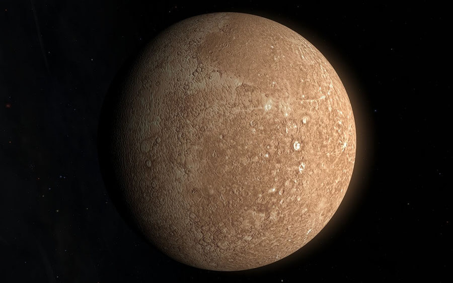
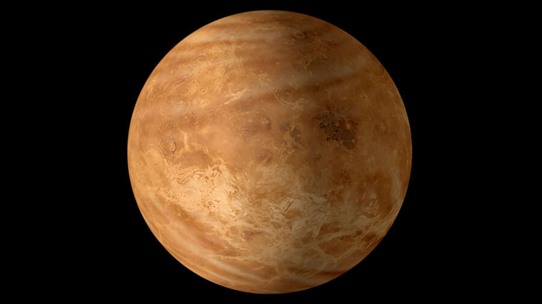
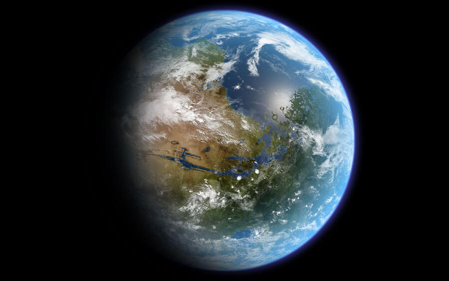
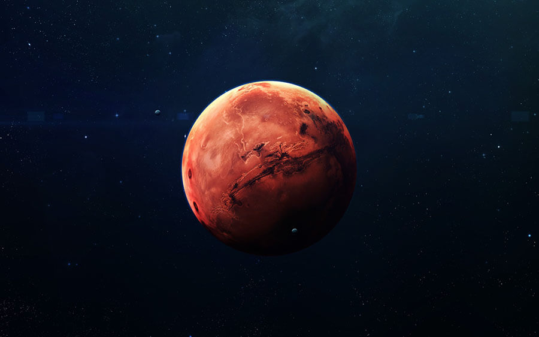
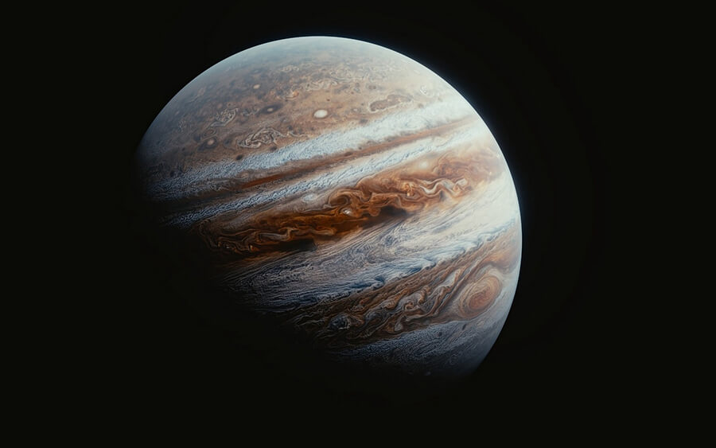
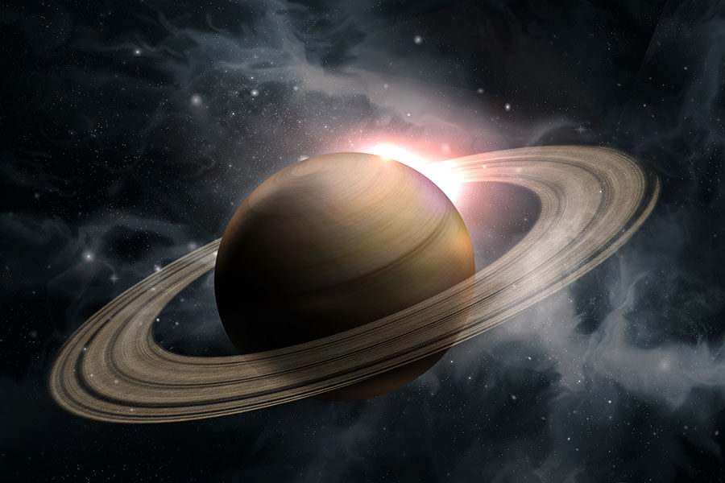
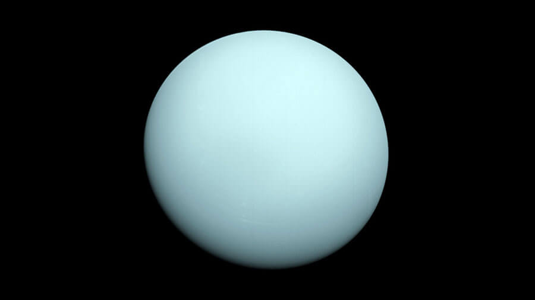
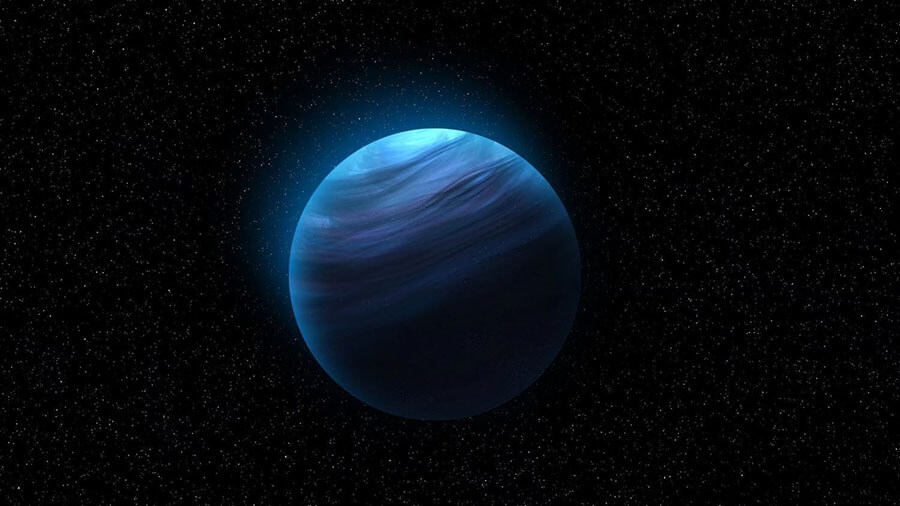

Что такое Солнечная система?
Солнечная система – это совокупность планет, вращающихся вокруг центральной звезды. Ученым удалось установить, что ей примерно 4,57 млрд лет, а появилась она за счет гравитационного сжатия газопылевого облака.
В основе системы лежит яркая звезда – Солнце, которое удерживает планеты и другие объекты. заставляя их вращаться по орбите на определенном расстоянии. Оно во много раз превосходит по диаметру другие объекты, находящиеся в области его притяжения.
Интересный факт: Солнце обладает такой большой массой, что все остальные планеты системы составляют лишь 0,0014% от его веса.
Планеты земной группы
Земная группа располагается ближе к Солнцу. Ее планеты имеют каменистую структуру и высокую плотность, из-за чего их размеры меньше, чем у газовых гигантов.
Меркурий
Меркурий
Ближайшая к Солнцу планета, также является самой маленькой в системе. Ее радиус составляет лишь 2440 км. Свое название она получила в честь бога торговли Меркурия. Ее поверхность серого цвета, из-за чего многие сравнивают с Луной. Планета не содержит спутников, а из-за сильных солнечных ветров ее атмосфера практически полностью разряжена.


Венера
Венера
Вторая планета от Солнца, носит имя в честь древнеримской богини любви. Отличительными особенностями являются отсутствие естественных спутников и высокое содержание углекислого газа в атмосфере. Радиус Венеры практически совпадает с земным: 6051 км, что всего лишь на 5% меньше. Из-за этого планеты называют “сестрами”. Однако внешне Венера сильно отличается, представляя собой шар молочного цвета. Поверхность практически полностью состоит из застывшей лавы с редкими кратерами от метеоритов.
Земля
Земля
Третья планета от Солнца, единственная, где присутствуют большие территориальные области, заполненные водой. Из-за благоприятных климатических условий и достаточного количества ресурсов является единственным источником жизни в Солнечной системе. Радиус планеты составляет 6378 км.
Марс
Марс
Красная планета является самой далекой от Солнца, относящейся к земной группе. Также считается самой маленькой после Меркурия. Ее радиус составляет 3396 км. Поверхность состоит преимущественно из песчаных и земляных рельефов, разбитых на светлые и темные области, именуемые материками и морями соответственно. В XXI веке Марс представляет большой интерес для ученых. Поскольку планета находится в относительной досягаемости, на нее регулярно отправляются марсоходы для сбора данных.
Планеты газовой группы
Данная группа состоит из четырех газовых гигантов, расположенных на большем расстоянии от Солнца, нежели другие планеты. Огромные размеры обусловлены низкой плотностью и большим количеством газообразных веществ в составе.
Юпитер
Юпитер
Самая большая планета в Солнечной системе. Ее радиус составляет 69912 км, что практически в 20 раз превышает земной. Ученые пока не могут точно определить состав планеты, лишь известно, что в ней больше ксенона, аргона и криптона больше, чем на Солнце. Также у Юпитера 67 спутников, причем некоторые по размеру вполне походят на планеты. Например, Ганимед на 8% больше, чем Меркурий, а имеет собственную атмосферу. Также есть теория, что Юпитер должен был стать полноценной звездой, но на этапе развития он так и остался планетой.
Сатурн
Сатурн
Шестая по счету планета, знаменитая своими кольцами, состоящими из льда и каменистых метеороидов. Радиус сатурна составляет 57360 км. Ученые еще не изучили детально состав поверхности, но смогли установить, что в ней имеются практически такие же химические элементы, как и на Солнце. Вокруг Сатурна находятся 62 спутника.
Уран
Уран
Третья по размерам планета в Солнечной системе. Ее радиус равен 25267 км. Температура на Уране держится на уровне -230 градусов по Цельсию, что делает его самой холодной планетой. Также он обладает уникальной особенностью: ось вращения расположена под углом, из-за чего при движении планета производит впечатление катящегося шара. Поверхность состоит преимущественно из льда, также имеется небольшое количество гелия и водорода.
Нептун
Нептун
Восьмая планета от Солнца была открыта не с помощью наблюдений, а за счет математических расчетов. Наблюдая аномалии в движении Урана ученые выдвинули предположение, что они возникли из-за наличия еще одного небесного тела больших размеров. Нептун обладает радиусом в 24547 км. Поверхность похожа на урановую, но по ней гуляют самые сильные ветра в системе, разгоняющиеся до 260 м/с.